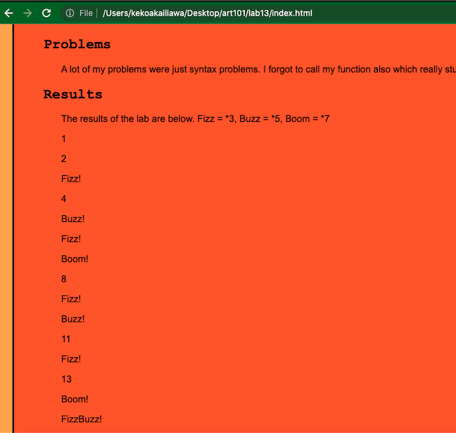

Debugging tools and strategies
Challenges
The challenege of this lab was to fix another.
Problems
I had no problems fixing lab 13, I just had to re-order my syntax.
Results
Results down below...
Debugging
The issue with Lab 13 was the order of my synatx in my js, which affected my output.
As I was looking through this lab, I realized that my multiples of 15, 21, and 35 weren't
showing a fizzbuzz, fizzboom, or buzzboom combination. It was only showing me the first multiple!
So I went and reordered my syntax because I remember Professor Wes mentioning how the combination multiples
should be placed in order from greatest to least. I didn't do any specific debugging method, other than refer to my notes
and remember out of the blue.
